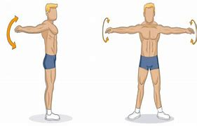
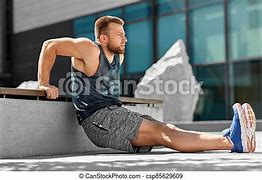
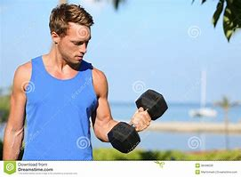

si vous voulez vous musculer et bien vous étes au bon androit ici vous trouvrai quel partie voulez vous vous musculer vous n'avez qu'a voir les phtos et vous trouvrai les lien de leurs exercices qui est compatible pendant 30 jours vous avez trois niveau DEBUTANT-INTERMEDIAIRE-AVANCE
Commençon:
Tenez-vous debout, les pieds écartés de la largeur des épaules, et tendez les bras parallèlement au sol. Encerclez vos bras vers l’avant en effectuant de petits mouvements contrôlés, en agrandissant graduellement les cercles jusqu’à ce que vous sentiez un étirement dans vos triceps. Inversez la direction des cercles après environ 10 secondes.
Asseyez-vous sur le bord d’une chaise stable, d’un banc de poids ou d’un pas et saisissez le bord à côté de vos hanches. Vos doigts doivent être pointés sur vos pieds, vos jambes étendues et vos pieds autour de la largeur de la hanche avec les talons touchant le sol. Regardez directement avec votre menton. Appuyez dans vos paumes pour soulever votre corps et glisser vers l’avant juste assez loin pour que votre derrière efface le bord de la chaise. Abaissez-vous jusqu’à ce que vos coudes soient pliés entre 45 et 90 degrés. Contrôlez le mouvement tout au long de l’amplitude des mouvements. Poussez-vous lentement jusqu’à ce que vos bras soient presque droits et répétez.
Sélectionnez des haltères d’un poids que vous pouvez soulever 10 fois avec une bonne forme. Les poids de démarrage suggérés mesurent 5 livres ou 10 livres par haltère. Si vous commencez tout juste, en réhabilitant une blessure ou en vous retournant à l’exercice après une période sédentaire, vous pourriez commencer avec 2 livres. Commencez à vous tenir debout avec vos pieds à propos de la largeur de la hanche. Gardez vos muscles abdominaux engagés. Tenez un haltère dans chaque main. Laissez vos bras se détendre sur les côtés de votre corps avec des paumes tournées vers l’avant. Garder vos bras stables et les épaules détendues, se pliez au coude et soulevez les poids afin que les haltères s’approchent de vos épaules. Vos coudes doivent rester cachés près de vos côtes. Expirez en levant. Abaisser les poids à la position de départ. Faites 8 à 10 boucles, puis reposez-vous et faites un ou deux autres ensembles.
